The project "Portrait of Protesters" is the result of Human and Artificial Intelligence (Neural Networks) cooperation. The consequence of this work is a portrait created from multiple photos of the faces of the members of the Belarusian protests of 2020.
The purpose of "depersonalizing" individuals in this case is not to deprive them of their unique traits, but to demonstrate the power of the collective, to illustrate the individuals participate in achieving a common goal by coming together. Thus in this case the "erasure" of individuality is a tool to give significance to each individual participant in the protests by creating a common portrait, as an allegory of a single great goal: just as a puzzle assembled from thousands of pieces cannot be complete if even a single piece is missing.
Furthermore, in a situation where every protester is at risk of being detained and convicted, it is incredibly important to maintain their anonymity. Thus the average portrait is an expression of appreciation and gratitude for each protester, without the chance of de-anonymising them.
The project culminates with a performative act: setting the portrait on fire. This act is the parallel to the act of self-immolation. Self-immolation as a form of suicide is, on the one hand, the extreme point of a person's powerlessness in the face of the situation they are facing; on the other hand, it is an act of the utmost self-sacrifice. In the case of setting fire to a portrait, the destructive and purifying fire is compared with unlived emotions such as fear, anger and the feeling of powerlessness in the face of a Ruthless State Machinery. Caused by the actions of the security forces and the inaction of the people caught up in the regime, these emotions are like fire: if they are not allowed to be released, they will burn a person to ashes.
Text by: Nastassia Batashova
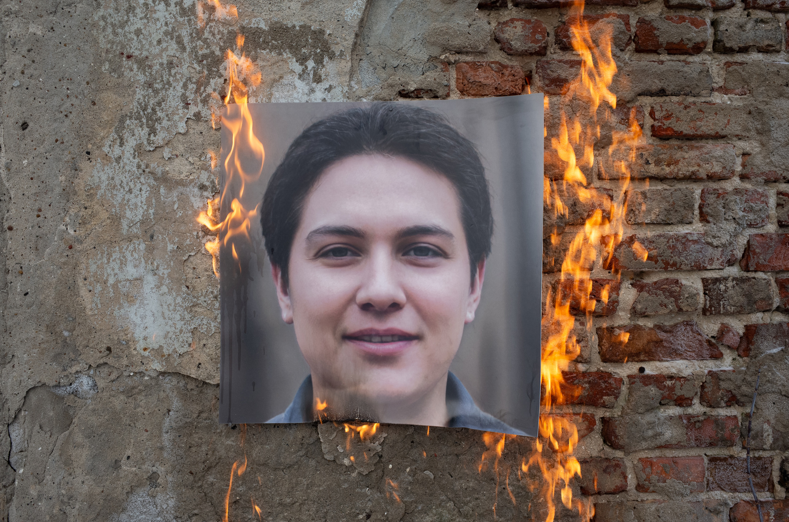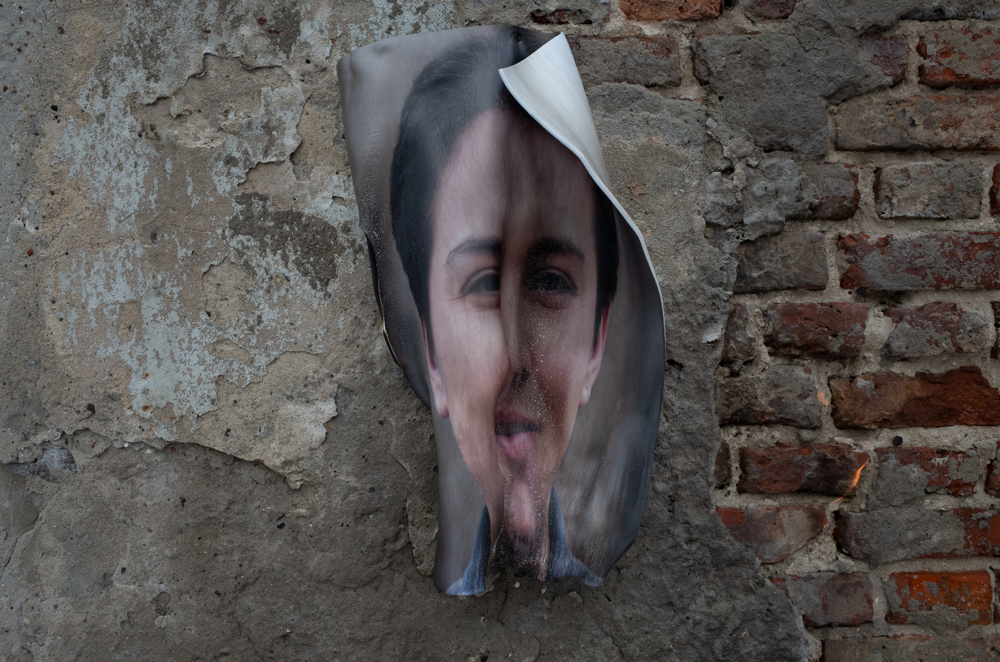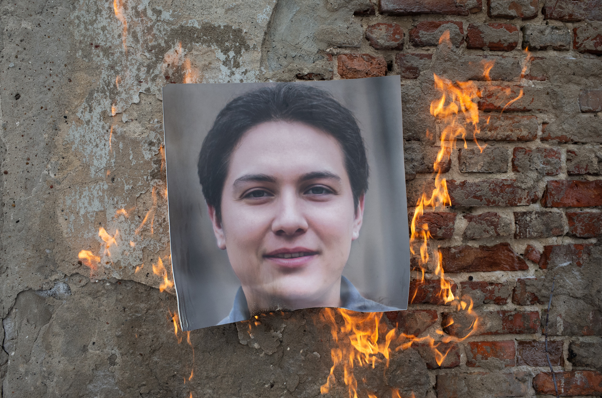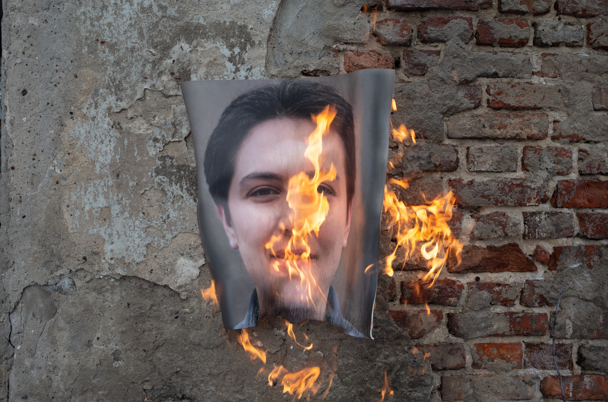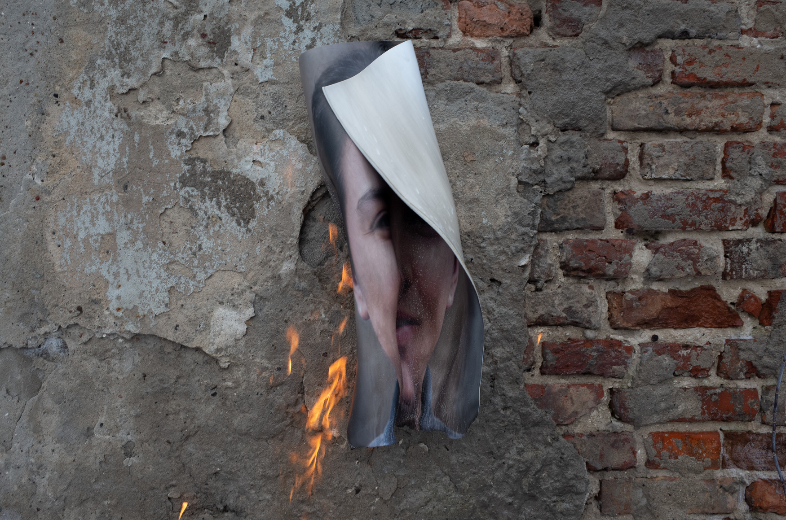
Psychologist review on project “Portrait of Protesters”
In every era, in every generation, the idea of freedom tries to break free from the structured, perfect calm of the limitless water surface. It creates a disturbance, looking for a gap through which a new stream, detached from the general flow, bursts. Thus a wave forms, it rages, erodes the reefs and shores, sharpens the immovable rock, does everything to express its rebellion, the eternal pain of confinement, the inner potential and overwhelming desire to break away from the earth and connect with the vast cosmos.
However, every gust of the wave is doomed to return to the calm waters.
When faced with the barrier of impassable reefs, the wave only intensifies its impact. Igniting the fire of rage, giving birth to boundless strength of resistance and not finding a way out, it only disintegrates into a multitude of splashes.
The wave finally subsides. The landscape has changed, the world will never be the same again, and the water surface regains its perfect stillness.
Text by: Alexander Stasevich
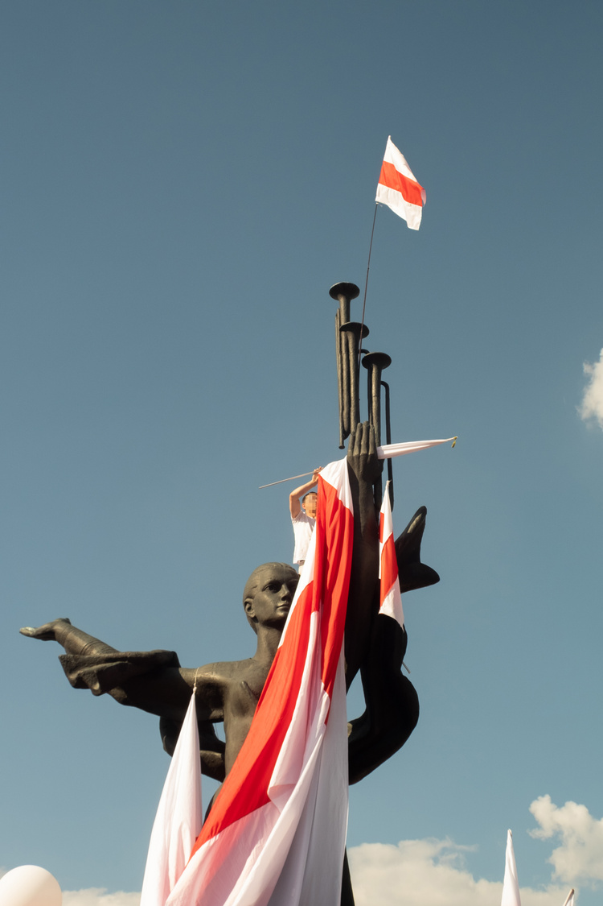
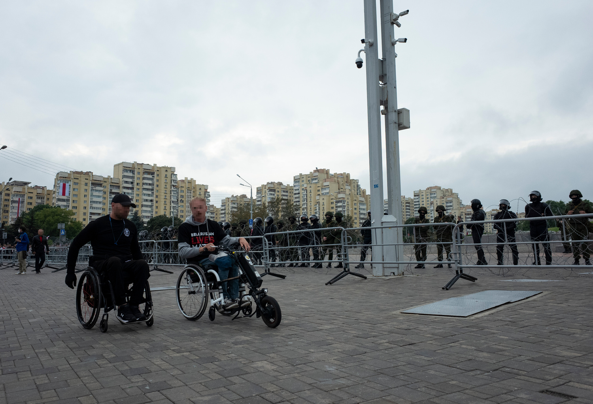
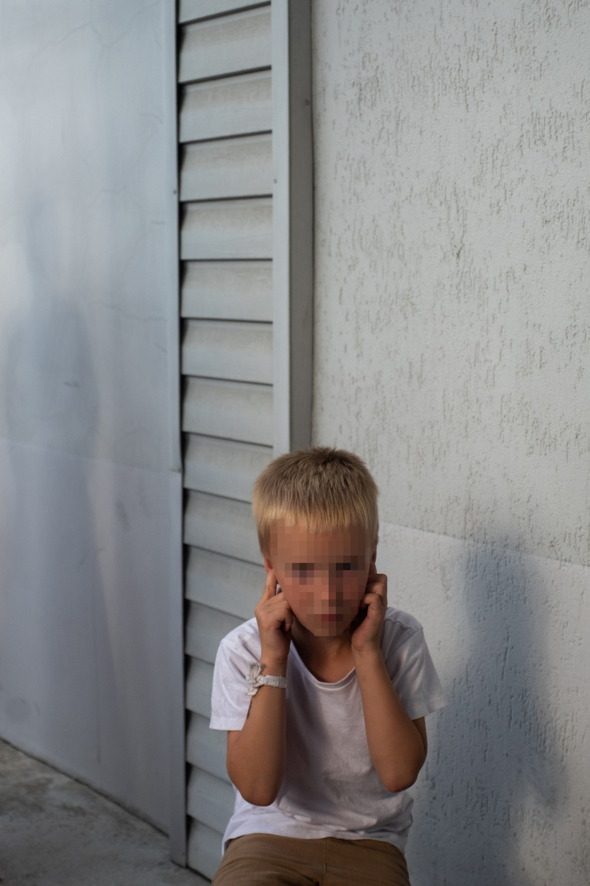
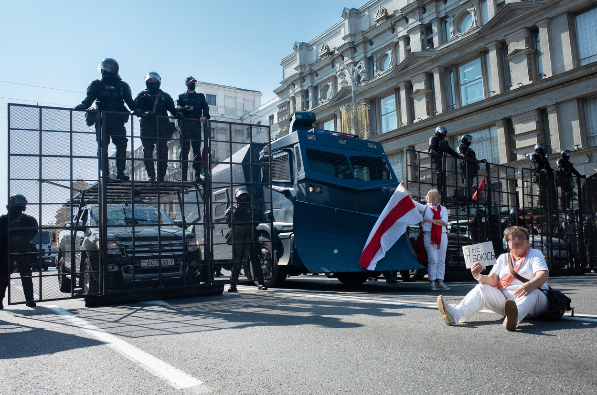
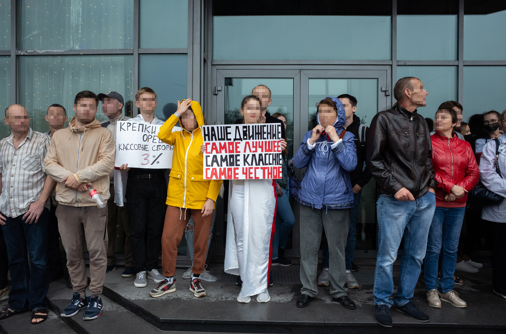
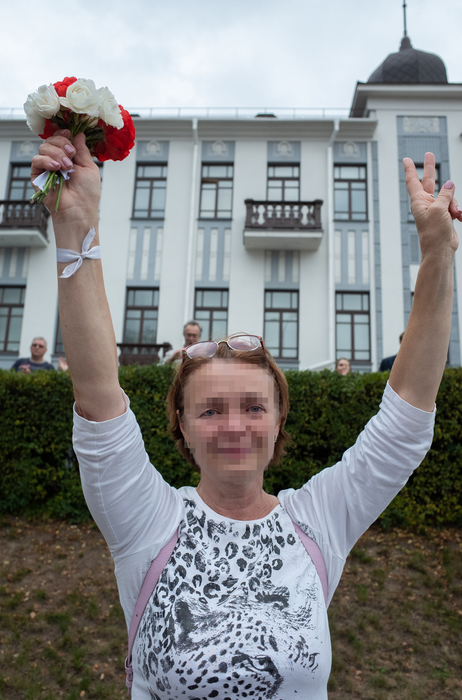
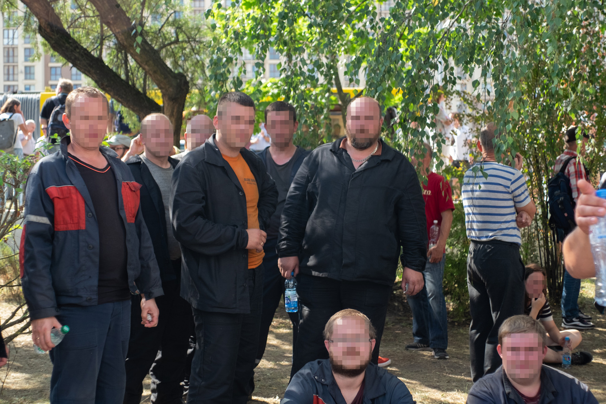
Face averaging with Neural Networks
My task was to find the average face of a Belarusian who took part in protest actions from May to November 2020. In this essay, in simple understandable language, without complex mathematical formulas and code, I will tell you how, using the technologies of computer vision and neural networks, I solved the problem.
Let's dive into the history
The history of face averaging goes back to 1878 when Francis Galton, Charles Darwin's cousin, invented a photographic technique for fusing faces by fusing the eyes. He thought that by averaging the faces of criminals, he could predict whether someone was a criminal based on their facial features. The hypothesis was never confirmed. However, he noted that the middle face was more attractive than the faces of which it is composed.
Several researchers in the 90s showed that people find average faces much more attractive than individuals. In one amusing experiment, researchers averaged the faces of 22 finalists for the 2002 Miss Germany pageant. People rated the middle face as much more attractive than the face of each of the 22 contestants, including Miss Berlin, who won the competition. It turns out that many celebrities' faces are attractive precisely because their faces are often close to average!
Shouldn't average be mediocre by definition? Why do we find the average person attractive? According to an evolutionary hypothesis called koinophilia, sexually reproducing animals seek out mates with average characteristics, because deviations from the mean can indicate unfavorable mutations. The middle face is also symmetrical because the variations on the left and right sides of the face are averaged out.
How we collected the dataset
At first, Gleb selected several hundred of his photographs and about the same from the Internet. As the project progressed, there was a need for more images. We asked photographers to send us photos, so we managed to collect 1886 unique images, among them were both portraits, group portraits, and crowd photos.
When working with the database of images, it was necessary to pay special attention to some criteria:
1. Lighting. It should be as low contrast as possible and correctly exposed.
2. The quality of the images, in order to get a detailed result, you need to have high-quality images.
3. The position of the face in the picture. Pictures in profile are of little information for our task.
4. Hats, masks, flags, and other items that cover the face will make it much more difficult to obtain a quality result.
Then the more technical part begins, I will describe the stages through which I managed to go through to get the average face.
Correlation and naive methods
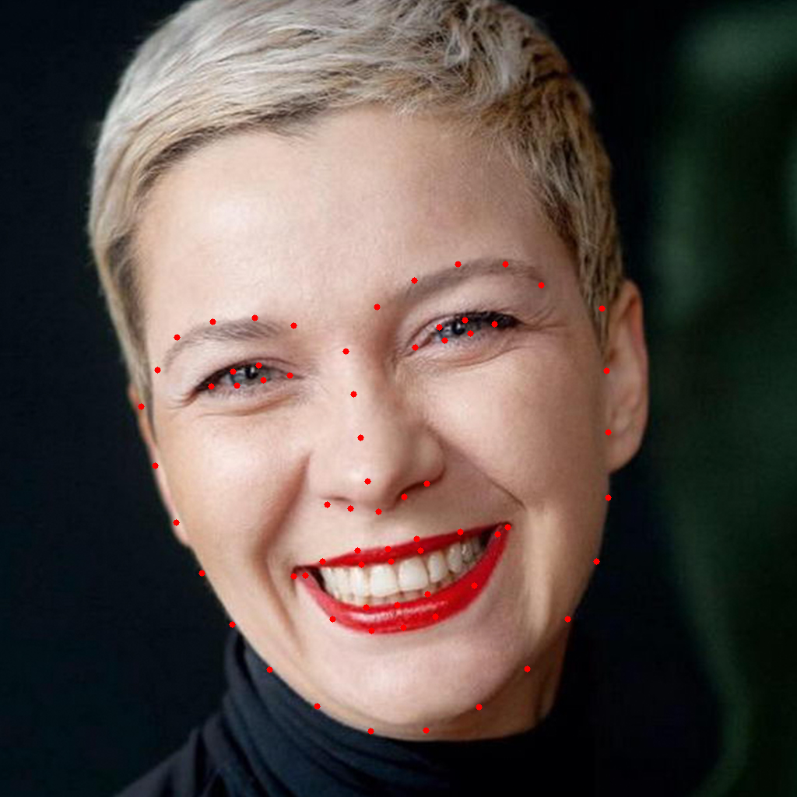
In order to detect facial features in photographs, I needed the dlib library used for machine learning, which is perfect for solving our problem. I used a pre-trained model that made it possible to define 68 landmarks in the photograph, such as the corners of the mouth, eyebrows, nose, chin, and eyes. In our dataset 8300 faces were defined.
Since after cutting out the faces from the source, the images turned out to be of different sizes and are in different positions, we will position all the faces in a single system and summarize all the images. It would be naive to expect good results from this method. Let's try it in action:
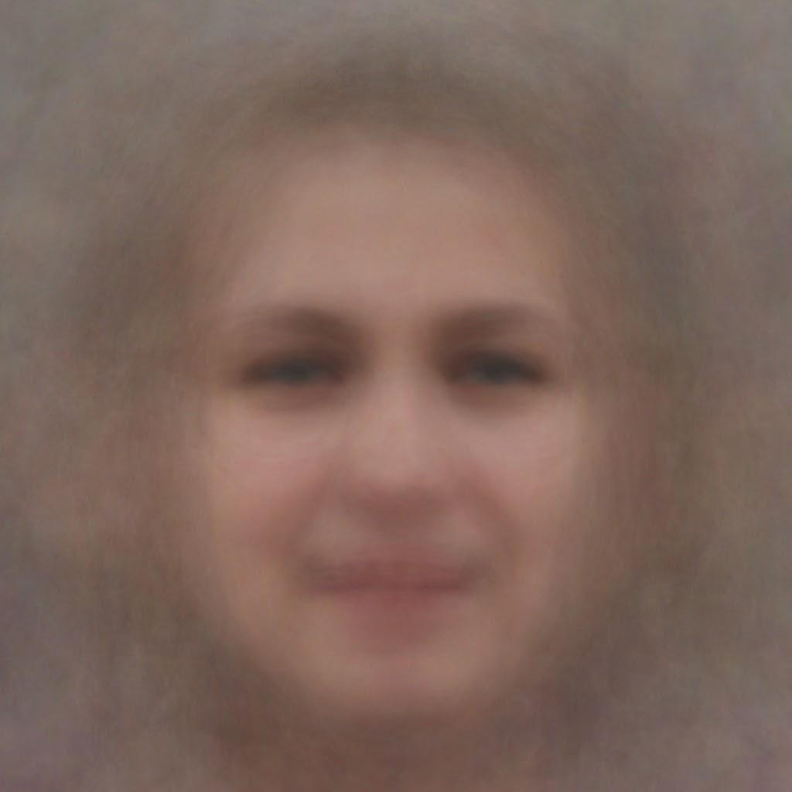
Obviously, the naive method is not perfect, we are trying to improve it significantly by applying correlation algorithms for this, we will need one of the best libraries for developing applications in the field of machine learning and computer vision OpenCV.
The faces in the images are aligned, now is the time to clarify the position of the eyes and other features. We only know the location of 68 points including groups corresponding to facial features in the input images. We will use these 68 points to divide the images into triangular regions, a process called Delaunay triangulation. Delaunay triangulation results in a list of triangles represented by point indices in an array of 76 points (68 points on the faces + 8 endpoints).
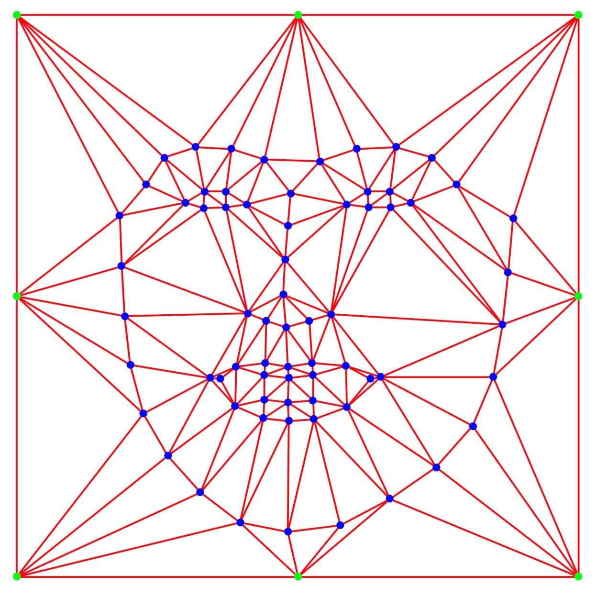
To compute the average face, with aligned features, we first need to compute the average of all the transformed landmarks in the coordinates of the output image. This is done by simply averaging the x and y values of our 68 points in the coordinates of the output image.
Next, it remains for us to transform each face to the values of the output averaged face (affine transformation) and sum them. Apparently, the protest in Belarus has a woman's face!
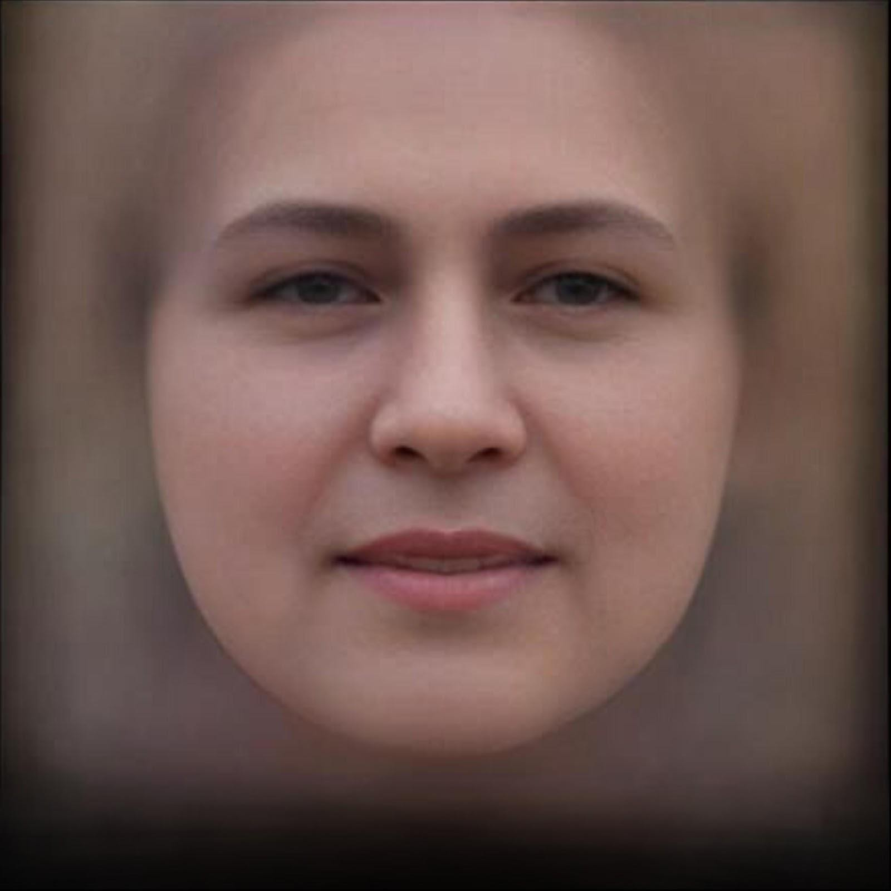
Generative adversarial neural networks. Hidden vector method:
The correlation method has shown itself well. But what if we try to further expand the number of criteria that determine the shape of the face? Let's try to apply more complex neural network algorithms to obtain an averaged image.
You've probably heard about a neural network from Nvidia that generates faces that are hard to distinguish from real ones. Something fresh!
At the time of this writing, the most current version of this neural network, StyleGAN2-ADA, is a state-of-the-art model with the ability to identify a huge variety of different attributes of high (for example, posture and face) and low (freckles and hair) and generate images without a teacher. ... In simple terms, the StyleGAN2 architecture tries to separate the high-level attributes of an image (face position, person's personality) from random variation factors such as hairstyle, freckles, and the like recognizable only by this neural net.
This network is a generative adversarial network, which consists of two networks opposed to each other, a generator and a discriminator, where the first neural network generates features and images, and the second compares the result for compliance with the categories of features and the required picture.
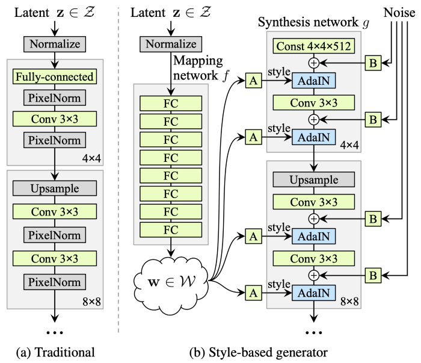
We need an encoder that receives an image as input and generates a latent representation at the output. Hidden features are various parameters, the shape of the face, lips, eyes, eyebrows, skin color, distances between parts of the face, hairstyle, background and millions of other parameters. The encoder encodes all these parameters as an array of real numbers. This transformation is necessary in order to give the neural network a photograph of the face in a representation it understands.
For the method of hidden vectors, we will need a dataset already prepared by us from images of Belarusians. We also need a pre-trained FFHQ-Config-F model based on 70,000 high-quality human images from Flickr. Which will help us achieve the highest quality.
The process of training, searching for hidden vectors using an encoder for the entire dataset took about 18 days, at the output we received 8300 vector files. Now we will introduce a new variable of the genome of each person to determine the degree of influence of each vector (person) on the final result. Take as a unit the full-fledged genome G of the average face and divide it by the number of images in the dataset
Let's calculate the final image by adding all the products of the genome to the vector corresponding to each person.
Don't you think the result of these two approaches is similar?
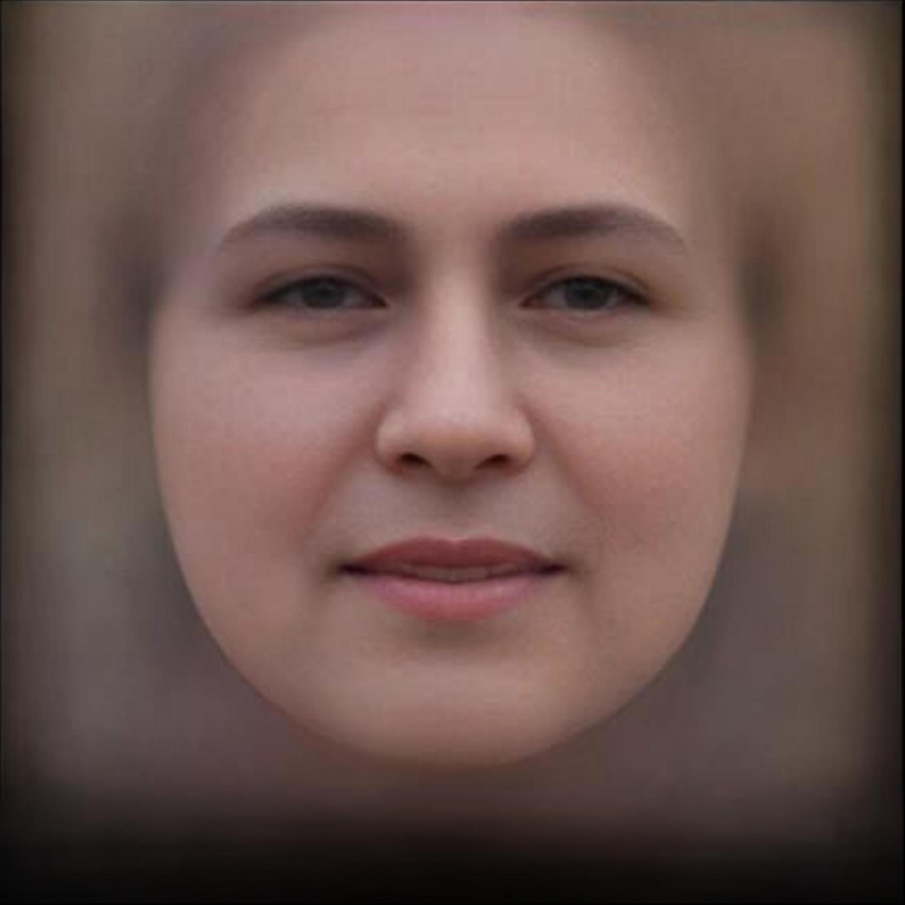
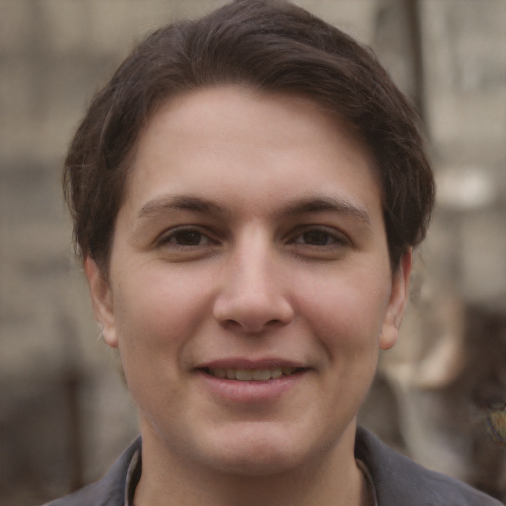
Let's keep experimenting and try to combine these two faces using the above method of hidden vectors.
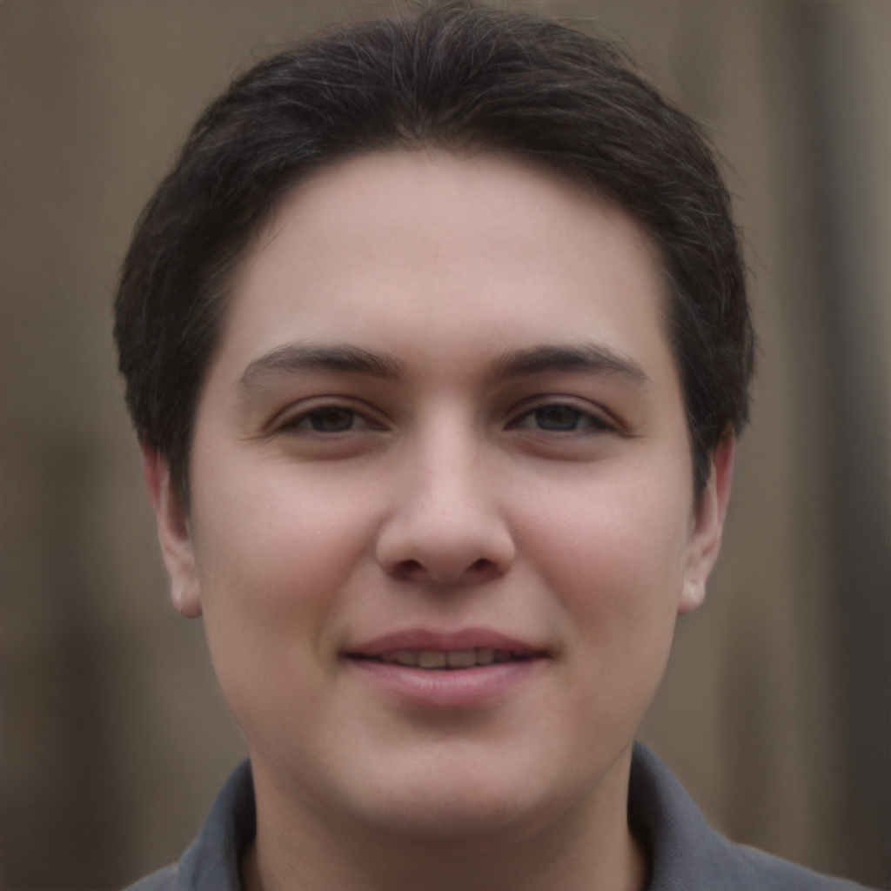
I would also like to tell you about the vector of hidden directions, it will be useful to us in order to somehow modify our face according to certain pre-trained parameters by changing the intensity, for example, we can change the smile, the position of the head, move our eyes.
Let’s try!
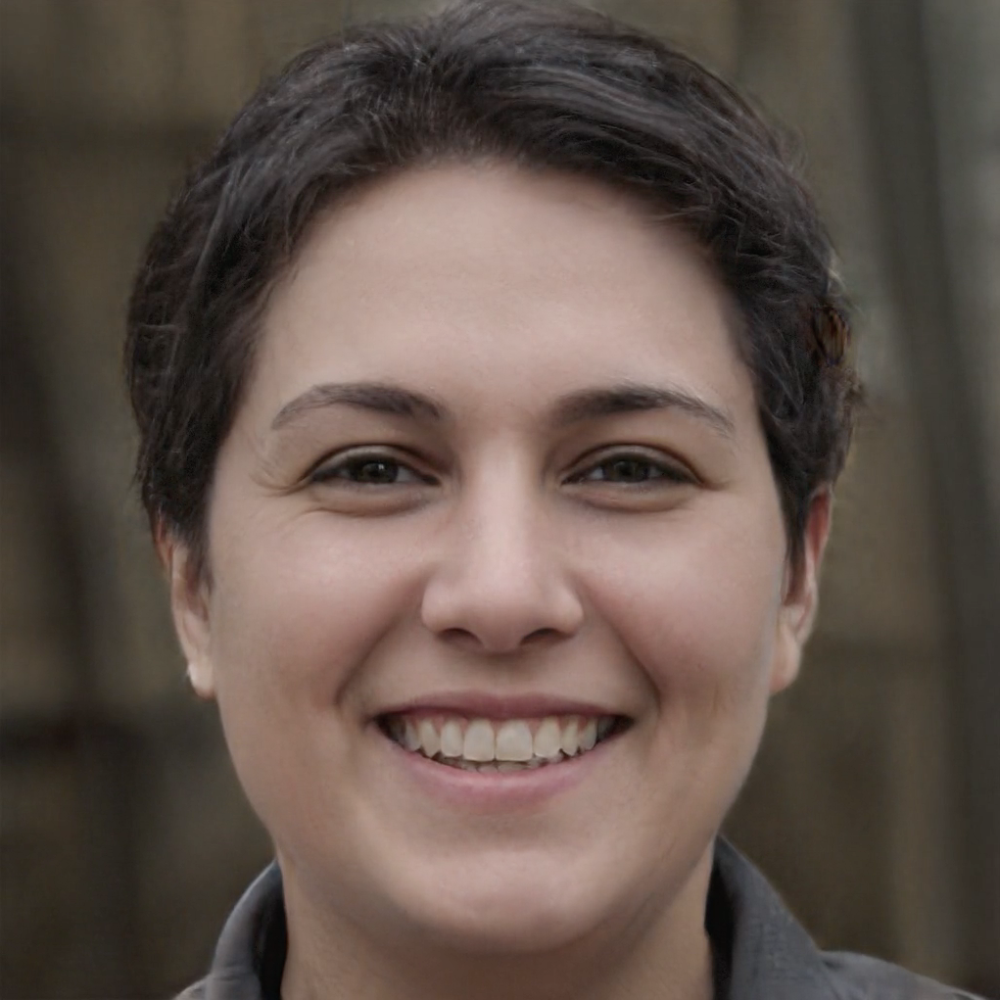
Author: Burnashev Gleb; Code, tech-implementation, text by: Ilya Novik, Software-Engineer.
Sources
http://dlib.net/
https://learnopencv.com/
https://github.com/NVlabs/stylegan2-ada
https://github.com/rolux/stylegan2encoder